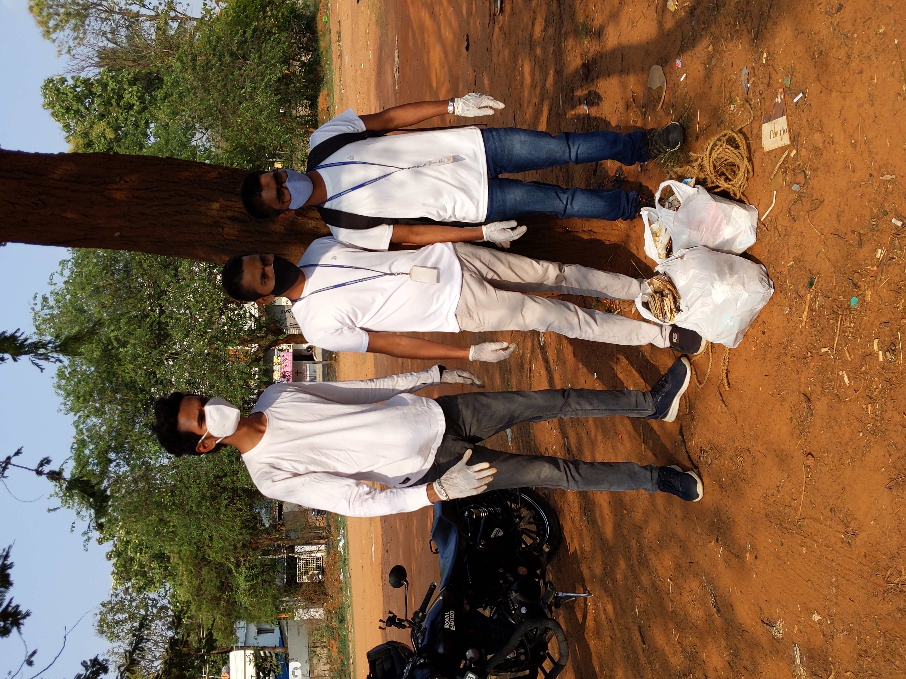
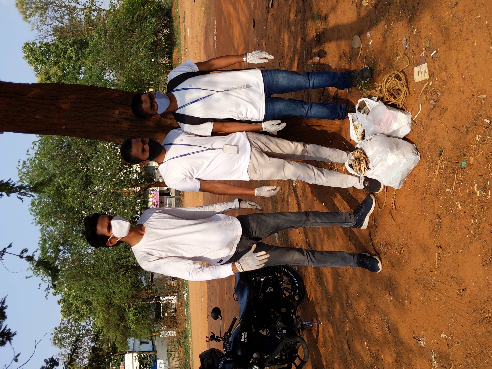
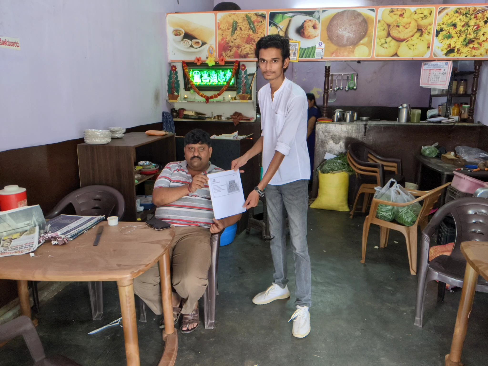
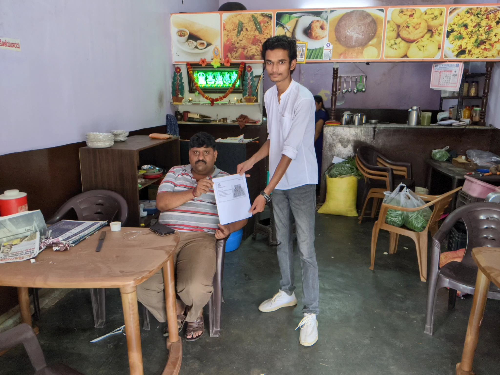

I and our batchmates went to nearby places from our residence. We had planned to demonstrate them how to keep our nearby area clean. Our aim was to make people nearby us aware about cleanliness and how to keep the surrounding and nearby area clean. We had planned an idea to explain them the importance of cleanliness, how they can keep their surrounding clean and what consequences can occur when it is not clean. After all this a explain them how keep the surrounding and environment clean. We performed our activity for spreading awareness for cleanliness. We taught them about energy conservation, clicked photos and successfully completed the activity. We conducted this activity for 5 consecutive days.
 
